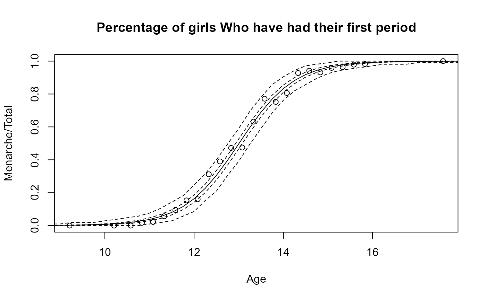

predict.glmb.RdObtains predictions and optionally estimates standard errors of those predictions from a fitted Bayesian generalized linear model object.
# S3 method for class 'glmb'
predict(
object,
newdata = NULL,
type = "link",
se.fit = FALSE,
dispersion = NULL,
terms = NULL,
na.action = na.pass,
olddata = NULL,
...
)a fitted object of class inheriting from "glmb".
optionally, a data frame in which to look for variables with which to predict. If omitted, the fitted linear predictors are used.
the type of prediction required. The default is on the scale of the linear predictors;
the alternative "response" is on the scale of the response variable. Thus for a default
binomial model the default predictions are of log-odds (probabilities
on logit scale) and type = "response" gives the predicted
probabilities. The "terms" option returns a matrix giving the
fitted values of each term in the model formula on the linear predictor
scale (not implemented).
logical switch indicating if standard errors are required (not implemented).
the dispersion of the Bayesian GLM fit to be assumed in
computing the standard errors. If omitted, that returned by the summary applied
to the object is used.
with type="terms" by default all terms are returned.
A character vector specifies which terms are to be returned.
function determining what should be done with missing values in
newdata. The default is to predict NA.
a data frame that should contain all the variables used in the original model specification. Must currently be provided whenever newdata is provided. Both olddata and newdata are subsetted to the model variables extracte from the object model formula and rbind(olddata,newdata) must be valid after this step. A check is also run to verify if the resulting x matrix from olddata is consistent with that from the original model object.
further arguments passed to or from other methods.
A matrix of predictions where the rows correspond to the draws from the estimated model, and the columns to the observations in the newdata dataset (or the original data if newdata is missing).
If newdata is omitted the predictions are based on the data
used for the fit. In that case how cases with missing values in the
original fit is determined by the na.action argument of that
fit. If na.action = na.omit omitted cases will not appear in
the residuals, whereas if na.action = na.exclude they will
appear (in predictions and standard errors), with residual value
NA. See also napredict.
Variables are first looked for in newdata and then searched for
in the usual way (which will include the environment of the formula
used in the fit). A warning will be given if the
variables found are not of the same length as those in newdata
if it was supplied.
data(menarche2)
## ----Analysis Setup-----------------------------------------------------------
## Number of variables in model
Age=menarche2$Age
nvars=2
## Reference Ages for setting of priors and Age_Difference
ref_age1=13 # user can modify this
ref_age2=15 ## user can modify this
## Define variables used later in analysis
Age2=Age-ref_age1
Age_Diff=ref_age2-ref_age1
mu1=as.matrix(c(0,1.098612),ncol=1)
V1<-1*diag(nvars)
V1[1,1]=0.18687882
V1[2,2]=0.10576217
V1[1,2]=-0.03389182
V1[2,1]=-0.03389182
Menarche_Model_Data=data.frame(Age=menarche2$Age,Total=menarche2$Total,
Menarche=menarche2$Menarche,Age2)
glmb.out1<-glmb(n=1000,cbind(Menarche, Total-Menarche) ~Age2,family=binomial(logit),
pfamily=dNormal(mu=mu1,Sigma=V1),data=Menarche_Model_Data)
#> Warning: non-integer #successes in a binomial glm!
# Prediction from original model
pred0=predict(glmb.out1,type="link")
colMeans(pred0)
#> 1 2 3 4 5 6 7
#> -6.1633246 -4.5404968 -3.9400506 -3.5343436 -3.1286367 -2.7229298 -2.3172228
#> 8 9 10 11 12 13 14
#> -1.9115159 -1.5058089 -1.1001020 -0.6943951 -0.2886881 0.1170188 0.5227257
#> 15 16 17 18 19 20 21
#> 0.9284327 1.3341396 1.7398466 2.1455535 2.5512604 2.9569674 3.3626743
#> 22 23 24 25
#> 3.7683813 4.1740882 4.5797951 7.4197437
pred1=predict(glmb.out1,type="response")
colMeans(pred1)
#> 1 2 3 4 5 6
#> 0.002154815 0.010708227 0.019287548 0.028606215 0.042240730 0.061970300
#> 7 8 9 10 11 12
#> 0.090064656 0.129165081 0.181879488 0.249972513 0.333219429 0.428392563
#> 13 14 15 16 17 18
#> 0.529194476 0.627667137 0.716554709 0.791252060 0.850349806 0.894918611
#> 19 20 21 22 23 24
#> 0.927334055 0.950295800 0.966259475 0.977214740 0.984666546 0.989705057
#> 25
#> 0.999379836
## Generate new data
Age_New <- seq(8, 20, 0.25)
Age2_New=Age_New-13
mod_Object=glmb.out1
obs_size=median(menarche2$Total) ## Counts for sim from Binomial
olddata=data.frame(Age=menarche2$Age,
Menarche=menarche2$Menarche,Total=menarche2$Total,Age2=Age2)
newdata=data.frame(Age=Age_New,Age2=Age2_New)
# Simulate for newdata
pred_menarche=predict(mod_Object,newdata=newdata,olddata=olddata,type="response")
pred_m=colMeans(pred_menarche)
n=nrow(mod_Object$coefficients)
pred_y=matrix(0,nrow=n,ncol=length(Age_New))
for(i in 1:n){
pred_y[i,1:length(Age_New)]=rbinom(length(Age_New),size=obs_size,
prob=pred_menarche[i,1:length(Age_New)
])
}
# Produce various predictions
pred_y_m=colMeans(pred_y/obs_size)
quant1_m=apply(pred_menarche,2,FUN=quantile,probs=c(0.025))
quant2_m=apply(pred_menarche,2,FUN=quantile,probs=c(0.975))
quant1_m_y=apply(pred_y/obs_size,2,FUN=quantile,probs=c(0.025))
quant2_m_y=apply(pred_y/obs_size,2,FUN=quantile,probs=c(0.975))
#Plot Predictions for newdata
plot(Menarche/Total ~ Age, data=menarche2,
main="Percentage of girls Who have had their first period")
lines(Age_New, pred_m,lty=1)
lines(Age_New, quant1_m,lty=2)
lines(Age_New, quant2_m,lty=2)
lines(Age_New, quant1_m_y,lty=2)
lines(Age_New, quant2_m_y,lty=2)
